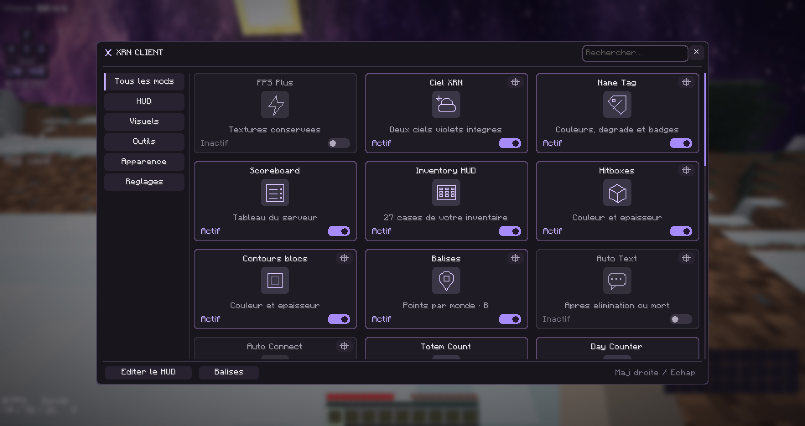
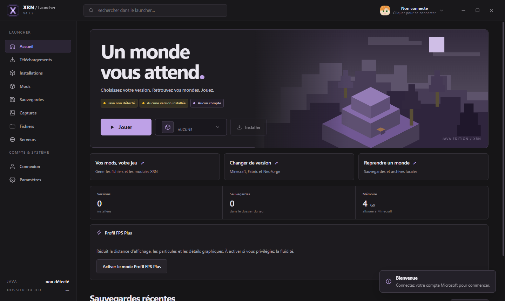

Choisir sa version
Minecraft classique ou Fabric, avec la version de Java adaptée à votre installation.
MINECRAFT JAVA · WINDOWS
Une version pour le PvP. Un monde pour construire. Vos mods, vos réglages et vos sauvegardes à portée de main.
Télécharger XRN ↓Un projet indépendant, développé par Xerion.

Chaque version a sa place. Retrouvez vos fichiers et préparez la prochaine session sans perdre le fil.

Minecraft classique ou Fabric, avec la version de Java adaptée à votre installation.
Importez vos fichiers et choisissez les mods à activer avant de jouer.
Consultez vos sauvegardes, vos captures F2 et les fichiers du jeu depuis le launcher.
Mémoire allouée, dossiers et préférences : votre configuration est enregistrée sur votre PC.
Placez les touches, l’armure ou les coordonnées là où elles vous servent. Ajustez leur taille et masquez le reste.
Armure, effets, totems, ping, coordonnées et touches : activez les modules selon votre façon de jouer.
Enregistrez des balises par monde ou serveur. Leurs noms et distances vous aident à retrouver votre chemin.
Ciels intégrés, couleurs du HUD et dégradés de pseudo. Les réglages visuels restent personnalisables.
POUR COMMENCER
Le launcher et le client intégré n’ont pas les mêmes contraintes de compatibilité.
Setup Windows 64 bits · XRN 4.8.1 · Connexion Internet nécessaire pour installer les fichiers du launcher.
Dans le dossier de jeu choisi dans les paramètres du launcher. Vos mondes, captures et mods restent sur votre PC.
Le launcher vous signale les nouvelles versions publiées. Lorsqu’un correctif compatible est disponible, seuls les fichiers modifiés sont téléchargés. Un changement du moteur du launcher peut nécessiter une mise à jour plus importante.
Non. XRN est un projet indépendant. Minecraft est une marque de Mojang et Microsoft ; XRN n’est ni un produit officiel, ni un produit approuvé par ces entreprises.